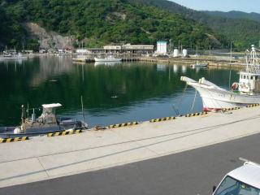
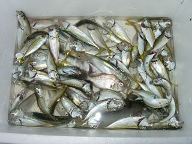

アジ子釣りの季節が始まります
2010/06/11
暑くなりましたね。海の季節です。

アジはまだ小さかったですが、サビキに引っ掛けて釣ることが出来ました。4号くらいの針が丁度いいかなと思いました。
沢山泳いでいますので、そこそこ数が釣れて楽しかったです。
島根県出雲市大社町杵築北
2010/06/11
暑くなりましたね。海の季節です。

アジはまだ小さかったですが、サビキに引っ掛けて釣ることが出来ました。4号くらいの針が丁度いいかなと思いました。
沢山泳いでいますので、そこそこ数が釣れて楽しかったです。
2009/7/18
大社の港でアジ子釣りをしました。今日は風が少し強く波もありましたが、防波堤内なので、風も波も少なく、快適でした。
魚も多く釣れて良かったです。
アジ、サバ、鯛、スズキとかの小さいサイズがつれました。

でもちょっと小さ過ぎですかね？から揚げにしたら、1匹が一口サイズになりました。